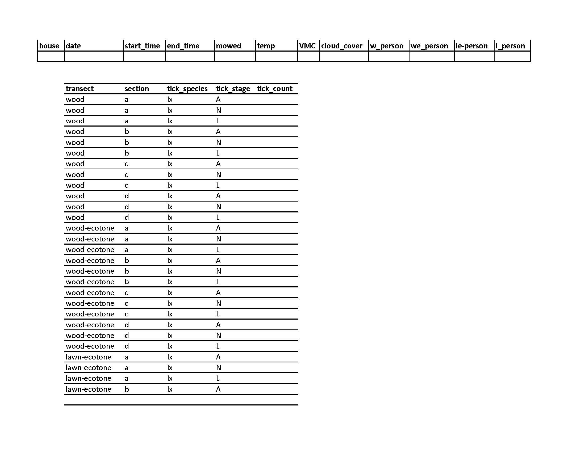

For the Terminix project of Zack student collected tick count data in the the yard of peoples houses. This data was collected on a standardize datasheet.
Background

Background
On the top of the datasheet there was a line for some metadata such as date, time, weather and name of people collecting the data.
The rest of the form had space to note the counts of 2 tick species in 3 different life stages. There were 4 transects and every zone has 4 sections. So it total there were 4 * 4 * 2 * 3 = 96 counts per yard per visit.
The files would be saved with as a csv file with the house number, date (mm_dd_yy) and experiment stage in the name. For example 012_07_12_23_pretreatment.
Background of code
The aim of the code I was writing was to open all the files, extract both the metadata and the count data and combine all of it into a large file.
An early test of the code on a few of the sheets went well and worked as expected.
The fun begins
get R setup
slightly complicated way of opening packages
makes sharing code easier
## Code to open the datasheets of the projectpackages <-c("tidyverse" , "cellranger" , "data.table" , "janitor" , "purrr" , "readxl")## install packages if needed and open librariesif (length(setdiff(packages, rownames(installed.packages()))) >0) {install.packages(setdiff(packages, rownames(installed.packages())), dependencies =TRUE)} invisible(lapply(packages, library, character.only =TRUE, warn.conflicts =TRUE, quietly =TRUE))
── Attaching core tidyverse packages ──────────────────────── tidyverse 2.0.0 ──
✔ dplyr 1.1.2 ✔ readr 2.1.4
✔ forcats 1.0.0 ✔ stringr 1.5.0
✔ ggplot2 3.4.4 ✔ tibble 3.2.1
✔ lubridate 1.9.2 ✔ tidyr 1.3.0
✔ purrr 1.0.1
── Conflicts ────────────────────────────────────────── tidyverse_conflicts() ──
✖ dplyr::filter() masks stats::filter()
✖ dplyr::lag() masks stats::lag()
ℹ Use the conflicted package (<http://conflicted.r-lib.org/>) to force all conflicts to become errors
Attaching package: 'data.table'
The following objects are masked from 'package:lubridate':
hour, isoweek, mday, minute, month, quarter, second, wday, week,
yday, year
The following objects are masked from 'package:dplyr':
between, first, last
The following object is masked from 'package:purrr':
transpose
Attaching package: 'janitor'
The following objects are masked from 'package:stats':
chisq.test, fisher.test
find files
Spaces in the path :-(
Remember No Spaces :-)
## all the datasheets are in a folder on Box## on my computer this is at ## C:\Users\dajansen3\Box\All data sheet entries EC 2023## adapt to your pathsheet_folder ="C://Users//dajansen3//Box//All data sheet entries EC 2023//"
New names:
Rows: 96 Columns: 5
── Column specification
──────────────────────────────────────────────────────── Delimiter: "," chr
(4): transect, section, tick_species, tick_stage dbl (1): tick_count
ℹ Use `spec()` to retrieve the full column specification for this data. ℹ
Specify the column types or set `show_col_types = FALSE` to quiet this message.
• `` -> `...1`
• `` -> `...7`
• `` -> `...8`
• `` -> `...9`
• `` -> `...10`
• `` -> `...11`
• `` -> `...12`
# A tibble: 96 × 5
transect section tick_species tick_stage tick_count
<chr> <chr> <chr> <chr> <dbl>
1 wood a Ix A 0
2 wood a Ix N 0
3 wood a Ix L 0
4 wood b Ix A 0
5 wood b Ix N 0
6 wood b Ix L 0
7 wood c Ix A 0
8 wood c Ix N 0
9 wood c Ix L 0
10 wood d Ix A 0
# ℹ 86 more rows
New names:
Rows: 98 Columns: 5
── Column specification
──────────────────────────────────────────────────────── Delimiter: "," chr
(5): ...2, ...3, ...4, ...5, ...6
ℹ Use `spec()` to retrieve the full column specification for this data. ℹ
Specify the column types or set `show_col_types = FALSE` to quiet this message.
• `` -> `...1`
• `` -> `...2`
• `` -> `...3`
• `` -> `...4`
• `` -> `...5`
• `` -> `...6`
• `` -> `...7`
• `` -> `...8`
• `` -> `...9`
• `` -> `...10`
• `` -> `...11`
• `` -> `...12`
# A tibble: 98 × 5
...2 ...3 ...4 ...5 ...6
<chr> <chr> <chr> <chr> <chr>
1 <NA> <NA> <NA> <NA> <NA>
2 transect section tick_species tick_stage tick_count
3 wood a Ix A 0
4 wood a Ix N 0
5 wood a Ix L 0
6 wood b Ix A N/A
7 wood b Ix N N/A
8 wood b Ix L N/A
9 wood c Ix A N/A
10 wood c Ix N N/A
# ℹ 88 more rows
Rows: 1 Columns: 12
── Column specification ────────────────────────────────────────────────────────
Delimiter: ","
chr (9): date, mowed, temp, VMC, cloud_cover, w_person, we_person, le-perso...
dbl (1): house
time (2): start_time, end_time
ℹ Use `spec()` to retrieve the full column specification for this data.
ℹ Specify the column types or set `show_col_types = FALSE` to quiet this message.
# A tibble: 1 × 12
house date start_time end_time mowed temp VMC cloud_cover w_person
<dbl> <chr> <time> <time> <chr> <chr> <chr> <chr> <chr>
1 1 6/1523 09:05 09:24 No 58 (air) 21% Cloudy SA
# ℹ 3 more variables: we_person <chr>, `le-person` <chr>, l_person <chr>
Rows: 1 Columns: 12
── Column specification ────────────────────────────────────────────────────────
Delimiter: ","
chr (7): date, mowed, cloud_cover, w_person, we_person, le-person, l_person
dbl (3): house, temp, VMC
time (2): start_time, end_time
ℹ Use `spec()` to retrieve the full column specification for this data.
ℹ Specify the column types or set `show_col_types = FALSE` to quiet this message.
# A tibble: 1 × 12
house date start_time end_time mowed temp VMC cloud_cover w_person
<dbl> <chr> <time> <time> <chr> <dbl> <dbl> <chr> <chr>
1 1 6/5/23 09:10 09:40 N 50 11 cloudy ML
# ℹ 3 more variables: we_person <chr>, `le-person` <chr>, l_person <chr>
Looks ok and we will get back to the metadata later
Open all datafiles
Aim: all datasheets and combine into one data file.
We are going to make a function to read the data
all_datasheets <-list.files(path = sheet_folder) read_data_v1 =function(filepath) { ## hint v1 is suggesting there are going to be more :-)#print(filepath) ## can help to find issuesread_csv(filepath, ## path to specific file,skip =4, ## skip first 4 rowscol_select =c(2:6), ## select column 2 to 6show_col_types =FALSE, ## don't show the message,,name_repair ="minimal"## don't try and repair names )}
Reading data (v1)
tibble(datasheet = all_datasheets) %>%mutate(path_to_sheet =paste0(sheet_folder, datasheet)) %>%slice(c(1:2)) %>%## lest first try it 2mutate(data =map(.x = path_to_sheet, .f = read_data_v1)) %>%select(-path_to_sheet) %>%## counting lines as a quick checkmutate(nr_rows_in_tibble =map_dbl(.x = data, .f = nrow))
Error in `mutate()`:
ℹ In argument: `data = map(.x = path_to_sheet, .f = read_data_v1)`.
Caused by error in `map()`:
ℹ In index: 3.
Caused by error:
! Names can't be empty.
✖ Empty names found at locations 1, 2, 3, 4, and 5.
Boo an error
Troubleshooting (1a)
What is happening?
Troubleshooting code/data
Errors stop the running of code. This can make troubleshooting hard.
The purrr package has a function that can keep code running.
Temporarily give an alternative outcome.
## purrr function## give the function to run and an alternative answer in case of errorread_data_possibly_v1 <- purrr::possibly(.f = read_data_v1, otherwise =tibble())
need to update the read function to deal with this
after a lot of trial and error, I found the fread function from the data.table package could deal with this
Troubleshooting (1d)
read_data_v2 =function(filepath) { ## hint v2 is suggesting there are going to be more :-)fread(filepath , header =TRUE , skip ="transect"## only start reading file after transect , select =2:6## selected columns , blank.lines.skip =TRUE## skip and empty lines ) %>%as_tibble() }read_data_possibly_v2 <- purrr::possibly(.f = read_data_v2, otherwise =tibble())
# A tibble: 96 × 7
transect section tick_species tick_stage tick_count ...6 ...7
<chr> <chr> <chr> <chr> <chr> <lgl> <lgl>
1 wood a Ix A NA NA NA
2 wood a Ix N NA NA NA
3 wood a Ix L NA NA NA
4 wood b Ix A NA NA NA
5 wood b Ix N NA NA NA
6 wood b Ix L NA NA NA
7 wood c Ix A 0 NA NA
8 wood c Ix N 0 NA NA
9 wood c Ix L 0 NA NA
10 wood d Ix A 0 NA NA
# ℹ 86 more rows
fun!! we have Excel files with a csv extension
I’ll also share now that there are real Excel files with an xlsx extension
Troubleshooting (2d)
To solve it we first need to know which files are:
real csv
real excel files
excel files with csv extension
We can use the purrr possible from earlier.
Troubleshooting (2e)
With files are ‘fake’ csv files
excel_files_with_csv_extension <-tibble(datasheet = all_datasheets) %>%mutate(path_to_sheet =paste0(sheet_folder, datasheet)) %>%mutate(data =map(.x = path_to_sheet, .f = read_data_possibly_v2)) %>%mutate(nr_rows_in_tibble =map_dbl(.x = data, .f = nrow)) %>%## filter all the ones with 0s as these are mistakesfilter(nr_rows_in_tibble ==0) %>%select(datasheet) %>%## select only the datasheet names pull() ## and pull these into a vectorexcel_files_with_csv_extension[1:10]
New names:
New names:
New names:
New names:
New names:
New names:
New names:
New names:
New names:
New names:
New names:
New names:
New names:
New names:
New names:
New names:
New names:
New names:
New names:
New names:
New names:
New names:
New names:
New names:
New names:
New names:
New names:
New names:
New names:
New names:
New names:
New names:
New names:
New names:
New names:
New names:
New names:
New names:
New names:
New names:
New names:
New names:
New names:
New names:
New names:
New names:
New names:
New names:
New names:
New names:
New names:
New names:
New names:
• `` -> `...6`
• `` -> `...7`
Are we there?
combined_sheets %>%unnest(cols =c(data))
Error in `list_unchop()`:
! Can't combine `x[[1]]$tick_count` <integer> and `x[[3]]$tick_count` <character>.
Unfortunately we have another sigh moment.
Reason is that we have two data types in one column.
Quick reminder
The full content of columns in R need to be in same data type and units
character (e.g, “a”, “swc”)
numeric (real or decimal) (e.g, 2, 2.0)
logical (FALSE, TRUE)
integer (e.g, 2L, as.integer(3))
complex (e.g, 1 + 0i, 1 + 4i) <- These can be annoying
Troubleshooting (3a)
combined_sheets_temp <- combined_sheets %>%mutate(temp_data =map(.x = data, ## turn all the columns to character .f = mutate_all, as.character)) combined_sheets_temp %>%select(datasheet, temp_data) %>%unnest(cols =c(temp_data)) %>%## turn the tick count column back to numeric## if this doesn't work the cell will turn into NAmutate(temp_count =as.numeric(tick_count)) %>%filter(!is.na(tick_count)) %>%filter(is.na(temp_count))
Warning: There was 1 warning in `mutate()`.
ℹ In argument: `temp_count = as.numeric(tick_count)`.
Caused by warning:
! NAs introduced by coercion
# A tibble: 7,105 × 7
datasheet transect section tick_species tick_stage tick_count temp_count
<chr> <chr> <chr> <chr> <chr> <chr> <dbl>
1 001_060523_pr… wood b Ix A N/A NA
2 001_060523_pr… wood b Ix N N/A NA
3 001_060523_pr… wood b Ix L N/A NA
4 001_060523_pr… wood c Ix A N/A NA
5 001_060523_pr… wood c Ix N N/A NA
6 001_060523_pr… wood c Ix L N/A NA
7 001_060523_pr… wood d Ix A N/A NA
8 001_060523_pr… wood d Ix N N/A NA
9 001_060523_pr… wood d Ix L N/A NA
10 001_060523_pr… wood-ec… b Ix A N/A NA
# ℹ 7,095 more rows
Troubleshooting (3a)
What are the non-numeric values?
## ok there are cells that have different values then NA or a numbercombined_sheets_temp %>%select(datasheet, temp_data) %>%unnest(cols =c(temp_data)) %>%mutate(temp_count =as.numeric(tick_count)) %>%filter(is.na(temp_count)) %>%select(tick_count) %>%distinct() %>%pull()
Warning: There was 1 warning in `mutate()`.
ℹ In argument: `temp_count = as.numeric(tick_count)`.
Caused by warning:
! NAs introduced by coercion
# A tibble: 10 × 6
datasheet transect section tick_species tick_stage tick_count
<chr> <chr> <chr> <chr> <chr> <chr>
1 009_072823_posttreatment… wood b Ix L 20+
2 026 06_06_2023.csv lawn-ec… d De A 1(M)
3 030 06_06_2023 Pre_Treat… wood b De A 1(F)
4 031 06_06_2023 Pre_Treat… wood-ec… a De A 1(M)
5 048 6_12_23.csv wood a Ix A 1 (F)
6 048 6_6_23.csv lawn-ec… a Ix A 1 (F)
7 049 6_6_23.csv lawn-ec… c Ix A 1(M)
8 051_7_18_23.csv wood a Ix L 1pm
9 065 6_12_23.csv wood b Ix A 1 (F)
10 067 6_12_23.csv wood d Ix A 1 (F)
Rows: 1 Columns: 12
── Column specification ────────────────────────────────────────────────────────
Delimiter: ","
chr (9): date, mowed, temp, VMC, cloud_cover, w_person, we_person, le-perso...
dbl (1): house
time (2): start_time, end_time
ℹ Use `spec()` to retrieve the full column specification for this data.
ℹ Specify the column types or set `show_col_types = FALSE` to quiet this message.
# A tibble: 1 × 12
house date start_time end_time mowed temp VMC cloud_cover w_person
<dbl> <chr> <time> <time> <chr> <chr> <chr> <chr> <chr>
1 1 6/1523 09:05 09:24 No 58 (air) 21% Cloudy SA
# ℹ 3 more variables: we_person <chr>, `le-person` <chr>, l_person <chr>
Metadata
so only one row of data and we have need all 12 column
we know now that not all files are simply csv with a fixed structure
lets see if we can adapt the last version of the read_data function
read_metadata_v1 =function(filetype, filepath) { ## can we do it with 1 version? if(filetype =="csv") { data.table::fread(filepath, header =TRUE, blank.lines.skip =TRUE , na.strings =c(NA, "N/A", "NA", "Na", "nA", "N.A")#, .name_repair = "unique_quiet", , check.names =TRUE , nrows =1) ## besides the header we only want 1 row } else { read_excel(filepath , na =c("N/A", "NA", "Na", "nA", "N.A") , n_max =1 ) } }
Warning: There were 29 warnings in `mutate()`.
The first warning was:
ℹ In argument: `temporal_temp = map_dbl(.x = temp, .f = as.numeric_possible)`.
Caused by warning:
! NAs introduced by coercion
ℹ Run `dplyr::last_dplyr_warnings()` to see the 28 remaining warnings.
# A tibble: 45 × 4
datasheet house temp temporal_temp
<chr> <chr> <chr> <dbl>
1 029_06.27.2023_PostTreatment3.csv 29 83� F 999
2 033_06.27.2023_PostTreatment3.csv 33 82� F 999
3 034_06.22.2023_PostTreatment2.csv 34 84� F 999
4 035_06.22.2023_PostTreatment2.csv 35 81� F 999
5 036_06.22.2023_PostTreatment2.csv 36 83� F 999
6 037_06.22.2023_PostTreatment2.csv 37 81� F 999
7 038_06.22.2023_PostTreatment2.csv 38 81� F 999
8 039_06.22.2023_PostTreatment2.csv 39 88� F 999
9 040_06.21.2023_PostTreatment2.csv 40 75� F 999
10 041_06.21.2023_PostTreatment2.csv 41 77� F 999
# ℹ 35 more rows
The question mark is a subscript i.
This is a tricky one to solve unless you go into all those datasheets and fix it,
Troubleshooting (3h)
ut I noticed (using View) that none of the temperatures in the problem sheets were above 99.
Warning: There were 29 warnings in `mutate()`.
The first warning was:
ℹ In argument: `temporal_temp = map_dbl(.x = temp, .f = as.numeric_possible)`.
Caused by warning:
! NAs introduced by coercion
ℹ Run `dplyr::last_dplyr_warnings()` to see the 28 remaining warnings.
Warning: There was 1 warning in `mutate()`.
ℹ In argument: `temp_numeric = as.numeric(...)`.
Caused by warning:
! NAs introduced by coercion
# A tibble: 10 × 5
datasheet house temp temporal_temp temp_numeric
<chr> <chr> <chr> <dbl> <dbl>
1 001 6_15_23.csv 1 58 (air) NA 58
2 019 07_07_2023.csv 19 Sunny NA NA
3 024_06.29.2023_PostTreatment3.csv 24 81° F NA 81
4 025_06.29.2023_PostTreatment3.csv 25 85° F NA 85
5 028_6_16_23_posttreatment1.csv 28 Pt Cloudy NA NA
6 029_06.27.2023_PostTreatment3.csv 29 83� F 999 83
7 033_06.27.2023_PostTreatment3.csv 33 82� F 999 82
8 034 06_06_2023 Pre_Treatment .csv 34 81-86 NA 81
9 034_06.22.2023_PostTreatment2.csv 34 84� F 999 84
10 034_06.29.2023_PostTreatment3.csv 34 88° F NA 88
## see if we remove % sign we fix the issuestep3 %>%mutate(VMC_numeric =as.numeric(str_remove_all(string = VMC, pattern ="%"))) %>%filter(!is.na(VMC) &is.na(VMC_numeric)) %>%select(datasheet, contains("VMC"))
Warning: There was 1 warning in `mutate()`.
ℹ In argument: `VMC_numeric = as.numeric(str_remove_all(string = VMC, pattern =
"%"))`.
Caused by warning:
! NAs introduced by coercion
# A tibble: 3 × 3
datasheet VMC VMC_numeric
<chr> <chr> <dbl>
1 057 06_07_2023.csv 14:R 42:L NA
2 057 6_7_23.csv 14 (R) 42 (L) NA
3 057_060723_pretreatment.csv 14% right, 42% left NA
## almost ## fix last few manuallystep4 <- step3 %>%mutate(VMC_numeric =as.numeric(str_remove_all(string = VMC, pattern ="%")))
Warning: There was 1 warning in `mutate()`.
ℹ In argument: `VMC_numeric = as.numeric(str_remove_all(string = VMC, pattern =
"%"))`.
Caused by warning:
! NAs introduced by coercion
Warning: There was 1 warning in `mutate()`.
ℹ In argument: `date_ymd = mdy(date)`.
Caused by warning:
! 269 failed to parse.
Warning: There was 1 warning in `mutate()`.
ℹ In argument: `date_ymd = if_else(is.na(date_ymd), ymd(date), date_ymd)`.
Caused by warning:
! 827 failed to parse.
# A tibble: 4 × 3
datasheet date date_ymd
<chr> <chr> <date>
1 001 6_15_23.csv 6/1523 NA
2 037_06.15.2023_PostTreatment1.csv 06/15/20223 NA
3 055 6_7_23.csv 7-Jun NA
4 060 06_12_2023.csv 12-Jun NA
Warning: There were 2 warnings in `mutate()`.
The first warning was:
ℹ In argument: `start_time_hm = hm(start_time)`.
Caused by warning in `.parse_hms()`:
! Some strings failed to parse, or all strings are NAs
ℹ Run `dplyr::last_dplyr_warnings()` to see the 1 remaining warning.
Warning: There was 1 warning in `mutate()`.
ℹ In argument: `time_hm = hm(time)`.
Caused by warning in `.parse_hms()`:
! Some strings failed to parse, or all strings are NAs
Warning: There was 1 warning in `mutate()`.
ℹ In argument: `time_hm = if_else(!is.na(time_hm), time_hm,
hms(str_remove(time, "1899-12-31")))`.
Caused by warning in `.parse_hms()`:
! Some strings failed to parse, or all strings are NAs
# A tibble: 2 × 4
datasheet time_group time time_hm
<chr> <chr> <chr> <Period>
1 043_6_15_23_posttreatment1.xlsx start_time 11 NA
2 056_6_15_23_posttreatment1.xlsx end_time 1 NA
step4a %>%mutate(start_time_hm =hms(str_remove(start_time, "1899-12-31")), end_time_hm =hms(str_remove(end_time, "1899-12-31"))) filter(!is.na(start_time) &is.na(start_time_hm))#!is.na(end_time) & is.na(end_time_hm)))## fix these by hand# final_metadata <- step5 %>% mutate(start_time_hm = hm(start_time), end_time_hm = hm(end_time)) %>% mutate(start = str_remove(start_time, "1899-12-31"), end = str_remove(end_time, "1899-12-31")) %>% mutate(start_time_hm = if_else(is.na(start_time_hm), hms(start),start_time_hm), end_time_hm = if_else(is.na(end_time_hm), hms(end),end_time_hm))## need to fix some of the column names#full_count_dataset %>% inner_join(final_metadata) \## this won't work, because the errors that are still in the dataset
## before dealing with all these problems we should check if we have all the data.house_sheet_info =tibble(datasheet = all_datasheets_cleaned) %>%mutate(info =str_remove_all(datasheet, pattern ='.csv|.xlsx')) %>%mutate(info =str_remove_all(info, pattern ='\\(.*')) %>%mutate(info =str_squish(info)) %>%separate(info, into =c(NA, "house", "year", "month", "day", "treatment"), remove =FALSE) %>%mutate(completed =complete.cases(.))
Warning: Expected 6 pieces. Missing pieces filled with `NA` in 1 rows [556].